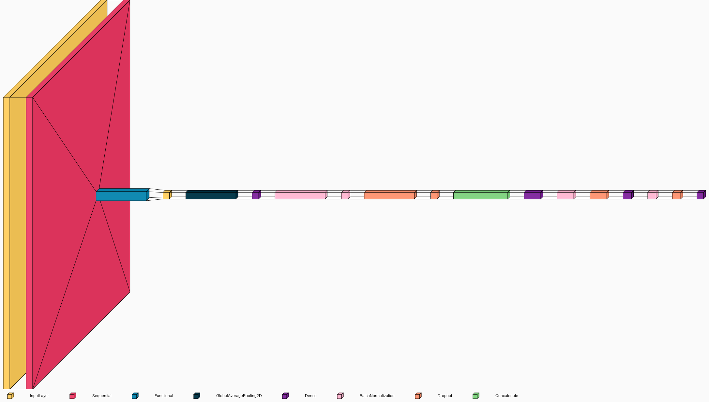

Arquitectura del Modelo de Clasificación de Calidad de Frutas
Este reporte muestra diferentes visualizaciones de la arquitectura del modelo híbrido que combina
EfficientNetB3 con características artesanales de color y textura para clasificar la calidad de las frutas.
Visualización 2D de Capas
Esta visualización muestra una vista aplanada (2D) de las capas del modelo, permitiendo ver la estructura general.
Visualización Vertical (top-to-bottom)

Esta visualización muestra las capas en formato vertical, simulando el flujo de datos desde arriba hacia abajo.
Visualización Horizontal (left-to-right)
Esta visualización muestra las capas en formato horizontal, simulando el flujo de datos de izquierda a derecha.
Visualización del Grafo de Procesamiento
Esta visualización muestra el grafo de procesamiento del modelo, mostrando la estructura de nodos y conexiones.
Resumen del Modelo
Model: "functional_1854"
┏━━━━━━━━━━━━━━━━━━━━━━━━━━━┳━━━━━━━━━━━━━━━━━━━━━━━━┳━━━━━━━━━━━━━━━┳━━━━━━━━━━━━━━━━━━━━━━━━┓
┃ Layer (type) ┃ Output Shape ┃ Param # ┃ Connected to ┃
┡━━━━━━━━━━━━━━━━━━━━━━━━━━━╇━━━━━━━━━━━━━━━━━━━━━━━━╇━━━━━━━━━━━━━━━╇━━━━━━━━━━━━━━━━━━━━━━━━┩
│ image_input (InputLayer) │ (None, 224, 224, 3) │ 0 │ - │
├───────────────────────────┼────────────────────────┼───────────────┼────────────────────────┤
│ data_augmentation │ (None, 224, 224, 3) │ 0 │ image_input[0][0] │
│ (Sequential) │ │ │ │
├───────────────────────────┼────────────────────────┼───────────────┼────────────────────────┤
│ efficientnetb3 │ (None, 7, 7, 1536) │ 10,783,535 │ data_augmentation[0][… │
│ (Functional) │ │ │ │
├───────────────────────────┼────────────────────────┼───────────────┼────────────────────────┤
│ features_input │ (None, 117) │ 0 │ - │
│ (InputLayer) │ │ │ │
├───────────────────────────┼────────────────────────┼───────────────┼────────────────────────┤
│ global_average_pooling2d │ (None, 1536) │ 0 │ efficientnetb3[0][0] │
│ (GlobalAveragePooling2D) │ │ │ │
├───────────────────────────┼────────────────────────┼───────────────┼────────────────────────┤
│ dense (Dense) │ (None, 128) │ 15,104 │ features_input[0][0] │
├───────────────────────────┼────────────────────────┼───────────────┼────────────────────────┤
│ batch_normalization │ (None, 1536) │ 6,144 │ global_average_poolin… │
│ (BatchNormalization) │ │ │ │
├───────────────────────────┼────────────────────────┼───────────────┼────────────────────────┤
│ batch_normalization_1 │ (None, 128) │ 512 │ dense[0][0] │
│ (BatchNormalization) │ │ │ │
├───────────────────────────┼────────────────────────┼───────────────┼────────────────────────┤
│ dropout (Dropout) │ (None, 1536) │ 0 │ batch_normalization[0… │
├───────────────────────────┼────────────────────────┼───────────────┼────────────────────────┤
│ dropout_1 (Dropout) │ (None, 128) │ 0 │ batch_normalization_1… │
├───────────────────────────┼────────────────────────┼───────────────┼────────────────────────┤
│ concatenate (Concatenate) │ (None, 1664) │ 0 │ dropout[0][0], │
│ │ │ │ dropout_1[0][0] │
├───────────────────────────┼────────────────────────┼───────────────┼────────────────────────┤
│ dense_1 (Dense) │ (None, 512) │ 852,480 │ concatenate[0][0] │
├───────────────────────────┼────────────────────────┼───────────────┼────────────────────────┤
│ batch_normalization_2 │ (None, 512) │ 2,048 │ dense_1[0][0] │
│ (BatchNormalization) │ │ │ │
├───────────────────────────┼────────────────────────┼───────────────┼────────────────────────┤
│ dropout_2 (Dropout) │ (None, 512) │ 0 │ batch_normalization_2… │
├───────────────────────────┼────────────────────────┼───────────────┼────────────────────────┤
│ dense_2 (Dense) │ (None, 256) │ 131,328 │ dropout_2[0][0] │
├───────────────────────────┼────────────────────────┼───────────────┼────────────────────────┤
│ batch_normalization_3 │ (None, 256) │ 1,024 │ dense_2[0][0] │
│ (BatchNormalization) │ │ │ │
├───────────────────────────┼────────────────────────┼───────────────┼────────────────────────┤
│ dropout_3 (Dropout) │ (None, 256) │ 0 │ batch_normalization_3… │
├───────────────────────────┼────────────────────────┼───────────────┼────────────────────────┤
│ dense_3 (Dense) │ (None, 12) │ 3,084 │ dropout_3[0][0] │
└───────────────────────────┴────────────────────────┴───────────────┴────────────────────────┘
Total params: 34,960,865 (133.37 MB)
Trainable params: 11,582,802 (44.18 MB)
Non-trainable params: 212,457 (829.91 KB)
Optimizer params: 23,165,606 (88.37 MB)
Visualización con Netron
Se han generado dos versiones del modelo para visualizar con Netron:
- Modelo completo: netron_model.keras
- Modelo simplificado: netron_simplified_model.keras
Para visualizar estos modelos:
- Instale Netron desde https://netron.app/
- Abra Netron y cargue los archivos .keras guardados
- También puede usar el comando:
netron [ruta_del_modelo] para abrir directamente
Nota: El modelo completo puede ser difícil de visualizar debido a su complejidad.
Se recomienda usar el modelo simplificado para una mejor interpretación visual.